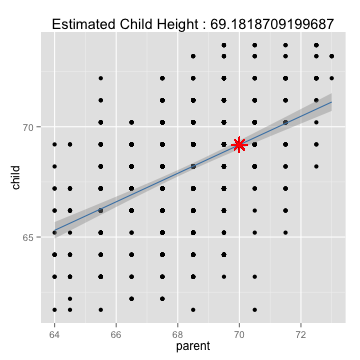

This dataset was tabulated by Galton in 1885
Dataset has two variables child and parent
Child - Child's height
Parent - the "midparent" height, an average of fathers height and 1.08 time the mother's
Banarasi Tippa
Database Engineer
This dataset was tabulated by Galton in 1885
Dataset has two variables child and parent
Child - Child's height
Parent - the "midparent" height, an average of fathers height and 1.08 time the mother's
data(galton)
str(galton)
## 'data.frame': 928 obs. of 2 variables:
## $ child : num 61.7 61.7 61.7 61.7 61.7 62.2 62.2 62.2 62.2 62.2 ...
## $ parent: num 70.5 68.5 65.5 64.5 64 67.5 67.5 67.5 66.5 66.5 ...
fit <- lm(child ~ parent, galton)
# summary(fit)
coef(fit)
## (Intercept) parent
## 23.9415 0.6463
Model :
child height = 23.9415 + parent * 0.6463
Lets see what's the child's height given parent's height = 70
y <- predict(fit, newdata = data.frame(parent = 70))
ggplot(galton, aes(parent, child)) + geom_point() + geom_smooth(method = "glm",
col = "steelblue") + geom_point(aes_string(x = 70, y = y), color = "red",
shape = 8, size = 5) + labs(title = paste("Estimated Child Height :", y))
